ドキュメントの変更をリクエスト
ドキュメントの変更をリクエスト GitHub で編集
GitHub で編集 寄稿者向けガイド
寄稿者向けガイドAWS EC2/FSXでのOracleの導入手順をステップバイステップで説明します
EC2コンソールを使用して、OracleのEC2 Linuxインスタンスを導入します
AWSを初めて使用する場合は、最初にAWS環境をセットアップする必要があります。AWS Webサイトのランディングページのドキュメントタブには、AWS EC2コンソールでOracleデータベースをホストするために使用できるLinux EC2インスタンスの導入方法に関するEC2指示のリンクが用意されています。次のセクションでは、これらの手順を簡単に説明します。詳細については、リンクされたAWS EC2固有のドキュメントを参照してください。
AWS EC2環境をセットアップします
EC2およびFSXサービスでOracle環境を実行するために必要なリソースをプロビジョニングするには、AWSアカウントを作成する必要があります。必要な詳細については、次のAWSのマニュアルを参照してください。
主なトピック：
-
AWSに登録する
-
キーペアを作成します。
-
セキュリティグループを作成します。
AWSアカウント属性で複数のアベイラビリティゾーンを有効にする
アーキテクチャ図に示されているOracleのハイアベイラビリティ構成については、リージョン内の少なくとも4つのアベイラビリティゾーンを有効にする必要があります。また、ディザスタリカバリに必要な距離を満たすために、複数のアベイラビリティゾーンを異なるリージョンに配置することもできます。

OracleデータベースをホストするEC2インスタンスを作成して接続します
チュートリアルを参照してください "Amazon EC2 Linuxインスタンスを使用する" 詳細な導入手順とベストプラクティスについては、を参照してください。
主なトピック：
-
概要（Overview）：
-
前提条件
-
手順1：インスタンスを起動します。
-
手順2：インスタンスに接続します。
-
手順3:インスタンスをクリーンアップします。
次のスクリーンショットは、Oracleを実行するEC2コンソールを使用したm5タイプのLinuxインスタンスの導入を示しています。
-
EC2ダッシュボードで、黄色のLaunch Instanceボタンをクリックして、EC2インスタンス導入ワークフローを開始します。
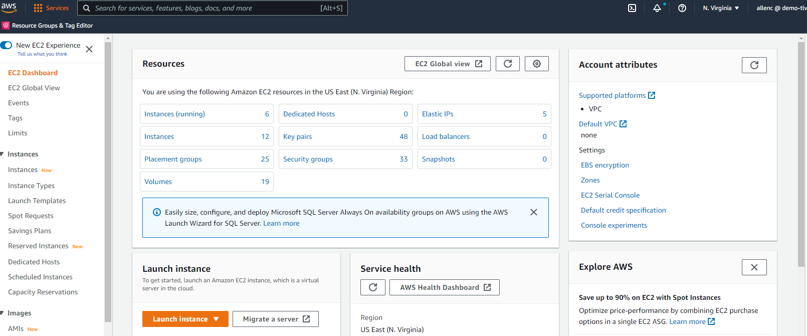
-
手順1で、「Red Hat Enterprise Linux 8（HVM）」、「SSD Volume Type-AMI-0b0af3577fe5e3532（64ビットx86）/AM-01fc429821bf1f4b4（64ビットARM ）」を選択します。

-
手順2で、Oracleデータベースのワークロードに基づいて適切なCPUとメモリの割り当てを持つm5インスタンスタイプを選択します。[次へ：インスタンスの詳細を構成]をクリックします。

-
手順3で、インスタンスを配置するVPCとサブネットを選択し、パブリックIPの割り当てを有効にします。[次へ：ストレージの追加]をクリックします。
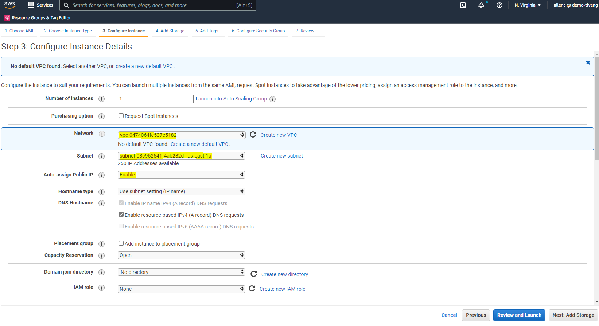
-
手順4で、ルートディスクに十分なスペースを割り当てます。スワップを追加するには、スペースが必要な場合があります。デフォルトでは、EC2インスタンスはゼロスワップスペースを割り当てますが、これはOracleの実行には最適ではありません。

-
手順5で、必要に応じて、インスタンス識別用のタグを追加します。

-
手順6で、既存のセキュリティグループを選択するか、インスタンスに対して適切なインバウンドポリシーとアウトバウンドポリシーを使用して新しいセキュリティグループを作成します。

-
手順7で、インスタンス構成の概要を確認し、[起動]をクリックしてインスタンスの展開を開始します。インスタンスにアクセスするためのキーペアの作成またはキーペアの選択を求められます。
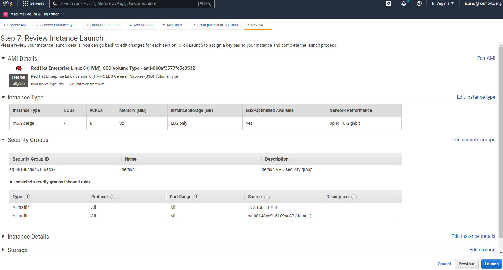
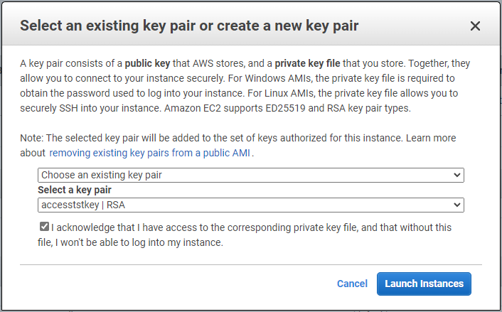
-
SSHキーペアを使用してEC2インスタンスにログインします。必要に応じて、キーの名前とインスタンスのIPアドレスを変更します。
ssh -i ora-db1v2.pem ec2-user@54.80.114.77
アーキテクチャ図に示されているように、プライマリおよびスタンバイのOracleサーバとして、2つのEC2インスタンスをそれぞれ指定のアベイラビリティゾーンに作成する必要があります。
Oracleデータベースストレージ用のONTAP ファイルシステム用のFSXをプロビジョニングします
EC2インスタンス環境では、OSにEBSルートボリュームが割り当てられます。FSX for ONTAP ファイル・システムは’Oracleバイナリ’データ’ログ・ボリュームなど’Oracleデータベース・ストレージ・ボリュームを提供しますFSXストレージNFSボリュームは、AWS FSXコンソールから、またはOracleインストールからプロビジョニングできます。また、自動化パラメータファイルでユーザーが設定したボリュームを割り当てる、構成の自動化も可能です。
ONTAP ファイルシステム用のFSXを作成しています
このドキュメントを参照 "ONTAP ファイルシステムのFSXの管理" ONTAP ファイルシステム用のFSXを作成する場合。
主な考慮事項：
-
SSDストレージ容量。1024 GiB以上、最大192 TiB。
-
プロビジョニングされたSSDのIOPS。ワークロードの要件に基づいて、ファイルシステムあたり最大80、000 SSD IOPS。
-
スループット容量
-
管理者のfsxadmin/vsadminパスワードを設定します。FSX設定の自動化に必要です。
-
バックアップとメンテナンス：自動日次バックアップを無効にします。データベースストレージのバックアップは、SnapCenter のスケジュール設定によって実行されます。
-
SVMの詳細ページから、SVM管理IPアドレスとプロトコル固有のアクセスアドレスを取得します。FSX設定の自動化に必要です。

プライマリまたはスタンバイのHA FSXクラスタをセットアップするには、次の手順を実行します。
-
FSXコンソールで、Create File Systemをクリックして、FSXプロビジョニングワークフローを開始します。

-
NetApp ONTAP のAmazon FSXを選択します。[ 次へ ] をクリックします。
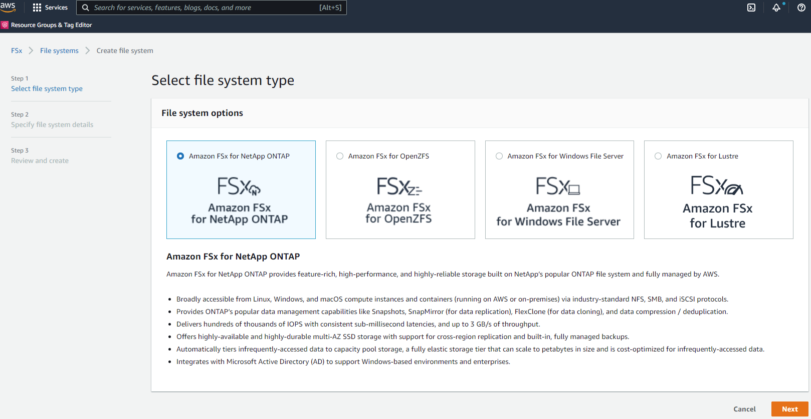
-
[標準作成]を選択し、[ファイルシステムの詳細]でファイルシステムに「Multi-AZ HA」という名前を付けます。データベースのワークロードに基づいて、最大80、000 SSDのIOPSを自動またはユーザプロビジョニングのどちらかを選択します。FSXストレージには、バックエンドで最大2TiBのNVMeキャッシングが搭載されており、これにより測定IOPSをさらに向上させることができます。
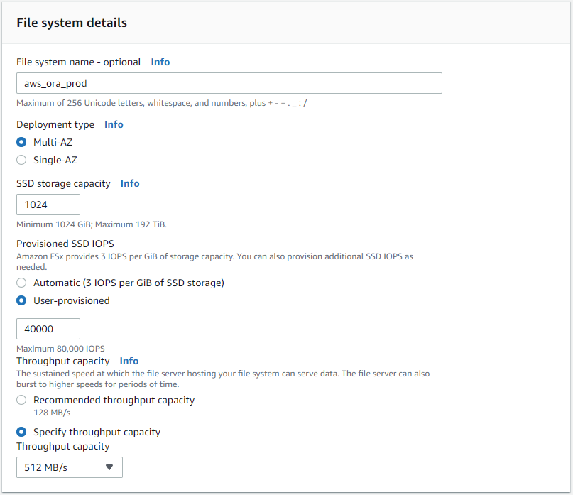
-
[ネットワークとセキュリティ]セクションで、VPC、セキュリティグループ、およびサブネットを選択します。これらは、FSX展開の前に作成する必要があります。FSXクラスタ（プライマリまたはスタンバイ）の役割に基づいて、FSXストレージノードを適切なゾーンに配置します。

-
[セキュリティと暗号化]セクションで、デフォルトを受け入れ、fsxadminパスワードを入力します。

-
SVM名とvsadminパスワードを入力します。
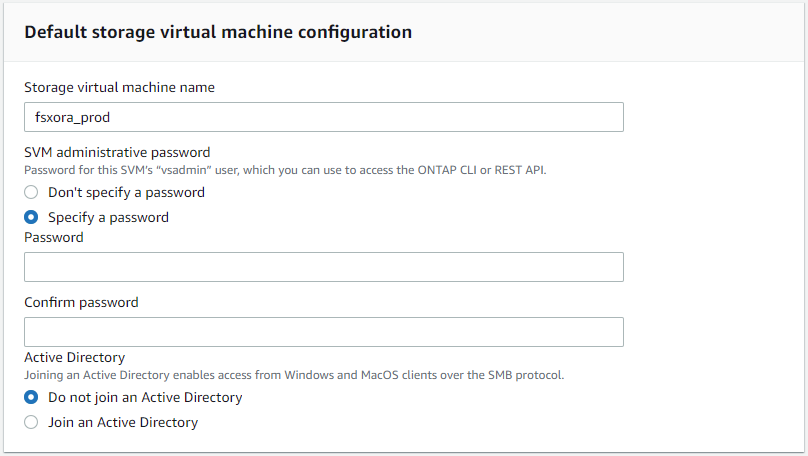
-
ボリューム構成は空白のままにします。この時点でボリュームを作成する必要はありません。
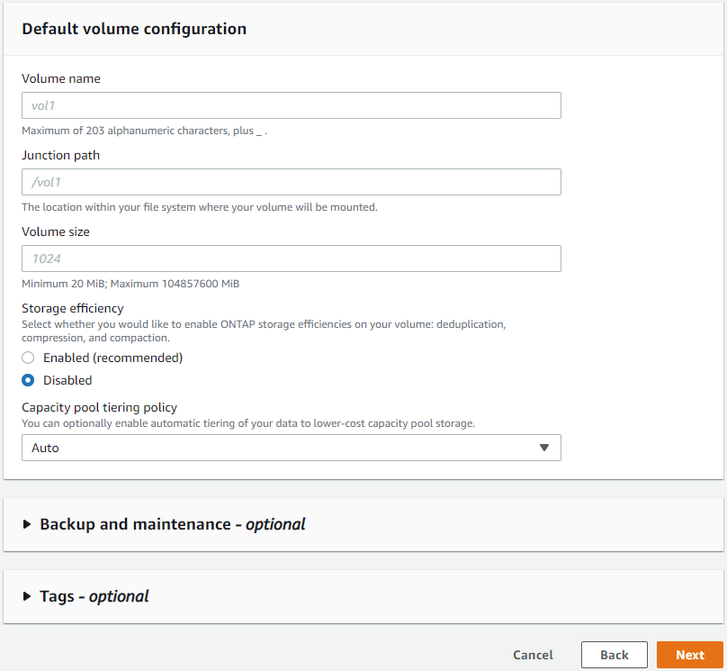
-
Summaryページを確認し、Create File Systemをクリックして、FSXファイルシステムのプロビジョニングを完了します。
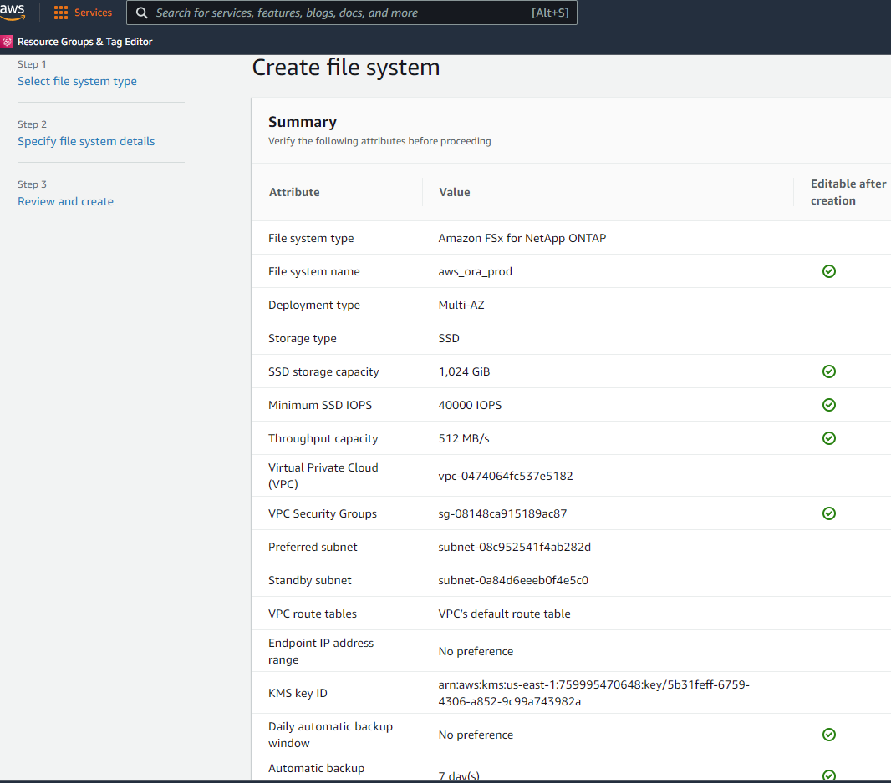
Oracleデータベース用のデータベースボリュームのプロビジョニング
を参照してください "ONTAP ボリュームのFSXの管理-ボリュームの作成" を参照してください。
主な考慮事項：
-
データベース・ボリュームのサイズを適切に設定します。
-
パフォーマンス構成の容量プール階層化ポリシーを無効にしています。
-
NFSストレージボリュームでのOracle dNFSの有効化。
-
iSCSIストレージボリュームのマルチパスのセットアップ。
FSXコンソールからデータベースボリュームを作成します
AWS FSXコンソールから、Oracleデータベースファイルストレージ用に、Oracleバイナリ用、Oracleデータ用、Oracleログ用の3つのボリュームを作成できます。ボリュームの名前が、適切に識別されるようにOracleホスト名（自動化ツールキットのhostsファイルに定義されている）と一致していることを確認してください。この例では、EC2インスタンスの一般的なIPアドレスベースのホスト名ではなく、db1をEC2 Oracleホスト名として使用します。


|
iSCSI LUNの作成は、現在FSXコンソールではサポートされていません。OracleのiSCSI LUNを導入する場合は、NetApp Automation ToolkitによるONTAP の自動化を使用してボリュームとLUNを作成できます。 |
FSXデータベース・ボリュームを持つEC2インスタンスにOracleをインストールして構成します
ベストプラクティスに基づいて、Oracleのインストールと設定をEC2インスタンスで実行する自動化キットがネットアップの自動化チームから提供されます。現在のバージョンの自動化キットは、デフォルトのRUパッチ19.8でNFS上のOracle 19Cをサポートしています。自動化キットは、必要に応じて他のRUパッチにも簡単に適用できます。
Ansibleコントローラを準備して自動化を実行します
セクションの指示に従ってください"[Creating and connecting to an EC2 instance for hosting Oracle database]「Ansibleコントローラを実行するための小規模なEC2 Linuxインスタンスをプロビジョニングします。RedHatを使用するのではなく、2vCPUと8G RAMのAmazon Linux T2.largeで十分です。
NetApp Oracle導入自動化ツールキットを入手できます
ステップ1からEC2ユーザとしてプロビジョニングされたEC2 Ansibleコントローラインスタンスと、EC2ユーザホームディレクトリから「git clone」コマンドを実行して、自動化コードのコピーをクローニングします。
git clone https://github.com/NetApp-Automation/na_oracle19c_deploy.gitgit clone https://github.com/NetApp-Automation/na_rds_fsx_oranfs_config.git自動化ツールキットを使用してOracle 19Cの自動導入を実行
詳細な手順を参照してください "CLI による Oracle 19C データベースの導入" Oracle 19CをCLI自動化機能で導入するには、次の手順を実行ホストアクセスの認証にパスワードではなくSSHキーペアを使用しているため、コマンド構文には少し変更があり、プレイブックを実行することができます。概要を次に示します。
-
デフォルトでは、EC2インスタンスはアクセス認証にSSHキーペアを使用します。Ansibleコントローラの自動化ルートディレクトリ'/home/ec2-user/na_oracle19c_deploy`と'/home/ec2-user/na_rds_fsx_oranfs_config’から’ステップで導入したOracleホストのSSHキー’accesstkey.pem’のコピーを作成します[Creating and connecting to an EC2 instance for hosting Oracle database]. 」
-
EC2インスタンスDBホストにEC2-USERとしてログインし、python3ライブラリをインストールします。
sudo yum install python3 -
ルートディスクドライブから16Gスワップスペースを作成します。デフォルトでは、EC2インスタンスはスワップスペースをゼロにします。AWSのドキュメントには次のものがあります "スワップファイルを使用して、Amazon EC2インスタンスのスワップスペースとして機能するようにメモリを割り当てるにはどうすればよいですか。"。
-
Ansibleコントローラ(`cd /home/ec2-user/na_rds_fsx_oranfs_config')に戻り’適切な要件と’linux_config’タグを含むPrecloneプレイブックを実行します
ansible-playbook -i hosts rds_preclone_config.yml -u ec2-user --private-key accesststkey.pem -e @vars/fsx_vars.yml -t requirements_configansible-playbook -i hosts rds_preclone_config.yml -u ec2-user --private-key accesststkey.pem -e @vars/fsx_vars.yml -t linux_config -
「/home/ec2-user/na_oracle19c_deploy-master」ディレクトリに切り替え、READMEファイルを読み、グローバル変数.ymlファイルに関連するグローバルパラメータを入力します。
-
host_name.ymlファイルに’host_vars’ディレクトリの関連パラメータを入力します
-
Linux用のプレイブックを実行し、vsadminパスワードの入力を求められたらEnterキーを押します。
ansible-playbook -i hosts all_playbook.yml -u ec2-user --private-key accesststkey.pem -t linux_config -e @vars/vars.yml -
Oracle用のプレイブックを実行し、vsadminパスワードの入力を求められたらEnterキーを押します。
ansible-playbook -i hosts all_playbook.yml -u ec2-user --private-key accesststkey.pem -t oracle_config -e @vars/vars.yml
必要に応じて、SSHキーファイルの権限ビットを400に変更します。「host_vars」ファイルのOracleホスト（「Ansibleホスト」）のIPアドレスを、EC2インスタンスのパブリックアドレスに変更します。
プライマリとスタンバイのFSX HAクラスタ間でSnapMirrorをセットアップする
高可用性とディザスタリカバリを実現するために、プライマリとスタンバイのFSXストレージクラスタ間にSnapMirrorレプリケーションを設定できます。他のクラウドストレージサービスとは異なり、FSXを使用すると、必要な頻度とレプリケーションスループットでストレージレプリケーションを制御および管理できます。また、ユーザはHAやDRのテストを可用性に影響を与えることなく実施できます。
次の手順は、プライマリおよびスタンバイFSXストレージクラスタ間のレプリケーションをセットアップする方法を示しています。
-
プライマリクラスタとスタンバイクラスタのピアリングを設定します。fsxadminユーザーとしてプライマリクラスタにログインし’次のコマンドを実行しますプライマリクラスタとスタンバイクラスタの両方でcreateコマンドが実行されます。「standby_cluster_name」を、ご使用の環境に適した名前に置き換えてください。
cluster peer create -peer-addrs standby_cluster_name,inter_cluster_ip_address -username fsxadmin -initial-allowed-vserver-peers * -
プライマリクラスタとスタンバイクラスタの間にvServerピアリングを設定します。vsadminユーザとしてプライマリクラスタにログインし、次のコマンドを実行します。「primary_vserver_name」、「standby_vserver_name」、「standby_cluster_name」を、ご使用の環境に適した名前に置き換えます。
vserver peer create -vserver primary_vserver_name -peer-vserver standby_vserver_name -peer-cluster standby_cluster_name -applications snapmirror -
クラスタとSVMのピアが正しく設定されていることを確認します。

-
プライマリFSXクラスタのソースボリュームごとに、スタンバイFSXクラスタにターゲットNFSボリュームを作成します。環境に応じてボリューム名を置き換えます。
vol create -volume dr_db1_bin -aggregate aggr1 -size 50G -state online -policy default -type DPvol create -volume dr_db1_data -aggregate aggr1 -size 500G -state online -policy default -type DPvol create -volume dr_db1_log -aggregate aggr1 -size 250G -state online -policy default -type DP -
データアクセスにiSCSIプロトコルが使用されている場合は、Oracleバイナリ、Oracleデータ、およびOracleログ用のiSCSIボリュームとLUNを作成することもできます。Snapshot用のボリュームには約10%の空きスペースを残します。
vol create -volume dr_db1_bin -aggregate aggr1 -size 50G -state online -policy default -unix-permissions ---rwxr-xr-x -type RWlun create -path /vol/dr_db1_bin/dr_db1_bin_01 -size 45G -ostype linuxvol create -volume dr_db1_data -aggregate aggr1 -size 500G -state online -policy default -unix-permissions ---rwxr-xr-x -type RWlun create -path /vol/dr_db1_data/dr_db1_data_01 -size 100G -ostype linuxlun create -path /vol/dr_db1_data/dr_db1_data_02 -size 100G -ostype linuxlun create -path /vol/dr_db1_data/dr_db1_data_03 -size 100G -ostype linuxlun create -path /vol/dr_db1_data/dr_db1_data_04 -size 100G -ostype linuxvol create -volume dr_db1_log -aggregate aggr1 -size 250G -state online -policy default -unix-permissions ---rwxr -xr-type rw
lun create -path /vol/dr_db1_log/dr_db1_log_01 -size 45G -ostype linuxlun create -path /vol/dr_db1_log/dr_db1_log_02 -size 45G -ostype linuxlun create -path /vol/dr_db1_log/dr_db1_log_03 -size 45G -ostype linuxlun create -path /vol/dr_db1_log/dr_db1_log_04 -size 45G -ostype linux -
iSCSI LUNの場合は、例としてバイナリLUNを使用して、各LUNのOracleホストイニシエータのマッピングを作成します。igroupを環境に適した名前に置き換え、LUNの追加ごとにlun-idを増やします。
lun mapping create -path /vol/dr_db1_bin/dr_db1_bin_01 -igroup ip-10-0-1-136 -lun-id 0lun mapping create -path /vol/dr_db1_data/dr_db1_data_01 -igroup ip-10-0-1-136 -lun-id 1 -
プライマリデータベースボリュームとスタンバイデータベースボリュームの間にSnapMirror関係を作成します。環境に適したSVM名を置き換えます。s
snapmirror create -source-path svm_FSxOraSource:db1_bin -destination-path svm_FSxOraTarget:dr_db1_bin -vserver svm_FSxOraTarget -throttle unlimited -identity-preserve false -policy MirrorAllSnapshots -type DPsnapmirror create -source-path svm_FSxOraSource:db1_data -destination-path svm_FSxOraTarget:dr_db1_data -vserver svm_FSxOraTarget -throttle unlimited -identity-preserve false -policy MirrorAllSnapshots -type DPsnapmirror create -source-path svm_FSxOraSource:db1_log -destination-path svm_FSxOraTarget:dr_db1_log -vserver svm_FSxOraTarget -throttle unlimited -identity-preserve false -policy MirrorAllSnapshots -type DP
このSnapMirrorのセットアップは、NetApp Automation Toolkit for NFSのデータベースボリュームで自動化できます。このツールキットは、NetApp公開のGitHubサイトからダウンロードできます。
git clone https://github.com/NetApp-Automation/na_ora_hadr_failover_resync.gitセットアップとフェイルオーバーのテストを行う前に、READMEの手順をよくお読みください。
|
|
Oracleバイナリをプライマリクラスタからスタンバイクラスタにレプリケートすると、Oracleのライセンスに影響する可能性があります。詳細については、Oracleのライセンス担当者にお問い合わせください。または、リカバリおよびフェイルオーバー時にOracleをインストールして設定します。 |
SnapCenter の導入
SnapCenter のインストール
をクリックします "SnapCenter サーバをインストールしています" SnapCenter サーバをインストールします。このドキュメントでは、スタンドアロンのSnapCenter サーバをインストールする方法について説明します。SnapCenter のSaaSバージョンはベータ版であり、近日中に提供予定です。必要に応じて、ネットアップの担当者にお問い合わせください。
EC2 Oracleホスト用のSnapCenter プラグインを設定します
-
SnapCenter の自動インストールが完了したら、SnapCenter サーバがインストールされているWindowsホストの管理ユーザとしてSnapCenter にログインします。
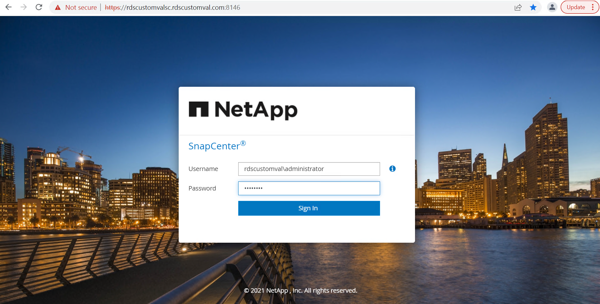
-
左側のメニューから、[設定]、[クレデンシャル]、[新規]の順にクリックして、SnapCenter プラグインのインストールに使用するEC2ユーザクレデンシャルを追加します。

-
EC2インスタンス・ホスト上の/etc/ssh/sshd_configファイルを編集して’ec2-userパスワードをリセットし’パスワードSSH認証を有効にします
-
[ sudo権限を使用する]チェックボックスがオンになっていることを確認します。前の手順でEC2-USERパスワードをリセットしただけです。
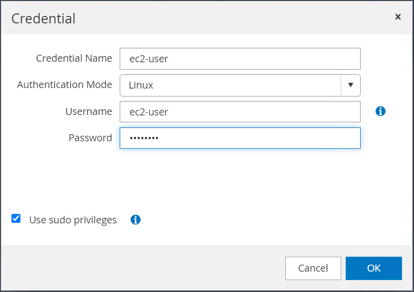
-
名前解決のために、SnapCenter サーバ名とIPアドレスをEC2インスタンスホストファイルに追加します。
[ec2-user@ip-10-0-0-151 ~]$ sudo vi /etc/hosts [ec2-user@ip-10-0-0-151 ~]$ cat /etc/hosts 127.0.0.1 localhost localhost.localdomain localhost4 localhost4.localdomain4 ::1 localhost localhost.localdomain localhost6 localhost6.localdomain6 10.0.1.233 rdscustomvalsc.rdscustomval.com rdscustomvalsc
-
SnapCenter サーバのWindowsホストで’Windowsホスト・ファイルC:\Windows\System32\drivers\etc\hostsにEC2インスタンスのホストIPアドレスを追加します
10.0.0.151 ip-10-0-0-151.ec2.internal
-
左側のメニューで、[Hosts]>[Managed Hosts]の順に選択し、[Add]をクリックしてEC2インスタンスホストをSnapCenter に追加します。
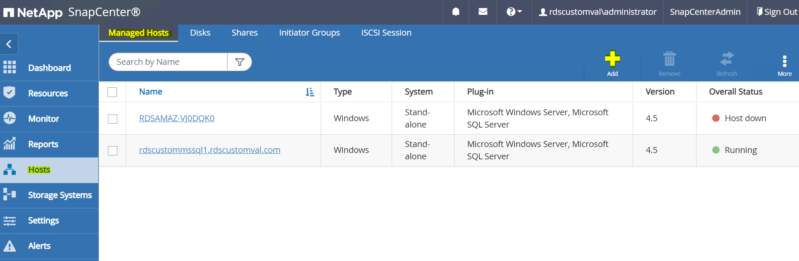
[Oracleデータベース]をオンにし、送信する前に[その他のオプション]をクリックします。

インストール前チェックをスキップするをオンにします。インストール前のチェックをスキップしていることを確認し、保存後に送信をクリックします。

[Confirm Fingerprint (指紋の確認)]というプロンプトが表示されたら、[Confirm and Submit (確認して送信)]をクリック

プラグインの設定が正常に完了すると、管理対象ホストの全体的なステータスはrunningと表示されます。

Oracleデータベースのバックアップポリシーを設定する
このセクションを参照してください "SnapCenter でデータベースバックアップポリシーを設定する" Oracleデータベースバックアップポリシーの設定の詳細については、を参照してください。
通常は、Oracleデータベースのフルスナップショットバックアップ用のポリシーと、Oracleアーカイブログのみのスナップショットバックアップ用のポリシーを作成する必要があります。
|
|
バックアップポリシーでOracleアーカイブログの削除を有効にして、ログとアーカイブのスペースを制御できます。HAまたはDRのスタンバイ場所にレプリケートする必要があるため、「セカンダリレプリケーションの選択」オプションで「ローカルSnapshotコピー作成後にSnapMirrorを更新」をオンにします。 |
Oracleデータベースのバックアップとスケジュールを設定
SnapCenter のデータベースバックアップはユーザが設定でき、個別に設定することも、リソースグループ内でグループとして設定することもできます。バックアップ間隔は、RTOとRPOの目標によって異なります。フルデータベースバックアップを数時間おきに実行し、ログバックアップのアーカイブを10～15分などの頻度でアーカイブして、迅速なリカバリを実現することを推奨します。
のOracleのセクションを参照してください "データベースを保護するためのバックアップポリシーを実装する" セクションで作成したバックアップポリシーを実装するための詳細な手順については、を参照してください [Configure backup policy for Oracle database] およびを使用してスケジュールを設定します。
次の図は、Oracleデータベースをバックアップするように設定されたリソースグループの例を示しています。
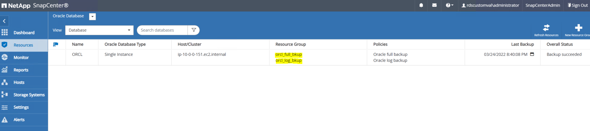